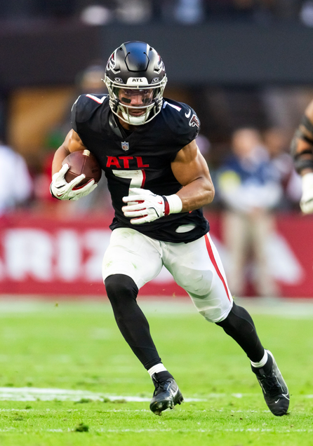

Offseason update
Four UDFAs sign as Chase Brown jumps to 85 OVR
See the signing results and all 18 confirmed ratings changes.
Inside the Ashton Hampton trade-up, Oklahoma City’s eight selections and Mercer’s B grade.
See the signing results and all 18 confirmed ratings changes.
Inside the Bijan trade, 14 free-agent signings, and the Bisons’ push to contend.
See contract terms and the latest $113M cap snapshot.

Oklahoma City retains No. 13 and shows $197.13M in post-trade cap space.

The $2.04 billion deal brings Luong’s stake to 81%.

The 124-minute extended cut screened February 22 and has been approved for distribution.

Oklahoma City unveiled its name, primary mark and orange-and-blue colors at Devon Tower.